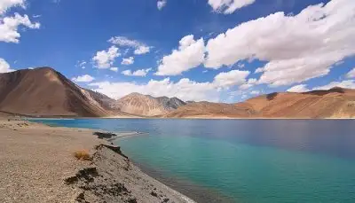

From the breathtaking snow-covered landscapes to picturesque natural beauties, Kasol is an astoundingly wonderful wonderland that’s the eminent playground for travel enthusiasts. This stunning destination is thronged with an amazing plethora of snowflake falls, crowning trees, lush green gardens covered in snow and the gurgling Parvati River.
Every corner of this place echoes unimaginable tranquillity. You can even immerse yourself in the beauty of the city by participating in enthralling activities like trekking. So, if you’re a backpacker who’s looking for serenity, then just visit Kasol, one of the top places to visit in India in winter.
Things to do in Kasol During Winters
- Go on Kheerganga trekking, café hopping, take a dip into Manikaran hot springs and stroll around the Parvati River.
- Visit Naggar Village, Malana Village, Tosh Village, Nakthan Village and Chalal.
2.Pangong Tso – Look For ‘Rancho’ Here

Since the day we have seen that unbelievably gorgeous Pangong Tso Lake in the Bollywood hit ‘3 Idiots’, we have been waiting for the day we’d get to visit it. Though it’s true that the lake is as mesmerising as it appeared onscreen, the bitter part is that ‘waiting’ isn’t going to get you there. Getting up to your computer and booking a trip to Ladakh on the other hand just might! So, rope in a few good friends who don’t mind a little chilly weather and get going to one of the best places to visit with friends.
Things To Do In Ladakh: Scooty ride near Pangong, ATV ride and camel safari in Nubra, river rafting in Zanskar, and more.
Places To Stay: Pangong Hermitage Resort, Pangong Paradise
Average Budget: INR 8,000